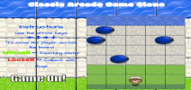

FEND Project - Portfolio Site
This was the third project in the Front-End Web Developers Nano Degree program at Udacity.Take a design mockup and replicate the design in HTML and CSS. Develop a responsive website that will display images, descriptions and links to each of the portfolio projects.
FEND Project - Interactive Resume
This was the fourth project in the Front-End Web Developers Nano Degree program at Udacity.
The objective of the project is to create an interactive resume using JavaScript.

FEND Project - Arcade Game Clone
This was the fifth project in the Front-End Web Developers Nano Degree program at Udacity.
Project is to create a clone of classic frogger game!
Kaz's Pizzeria
Who wants an Optimized pizza?